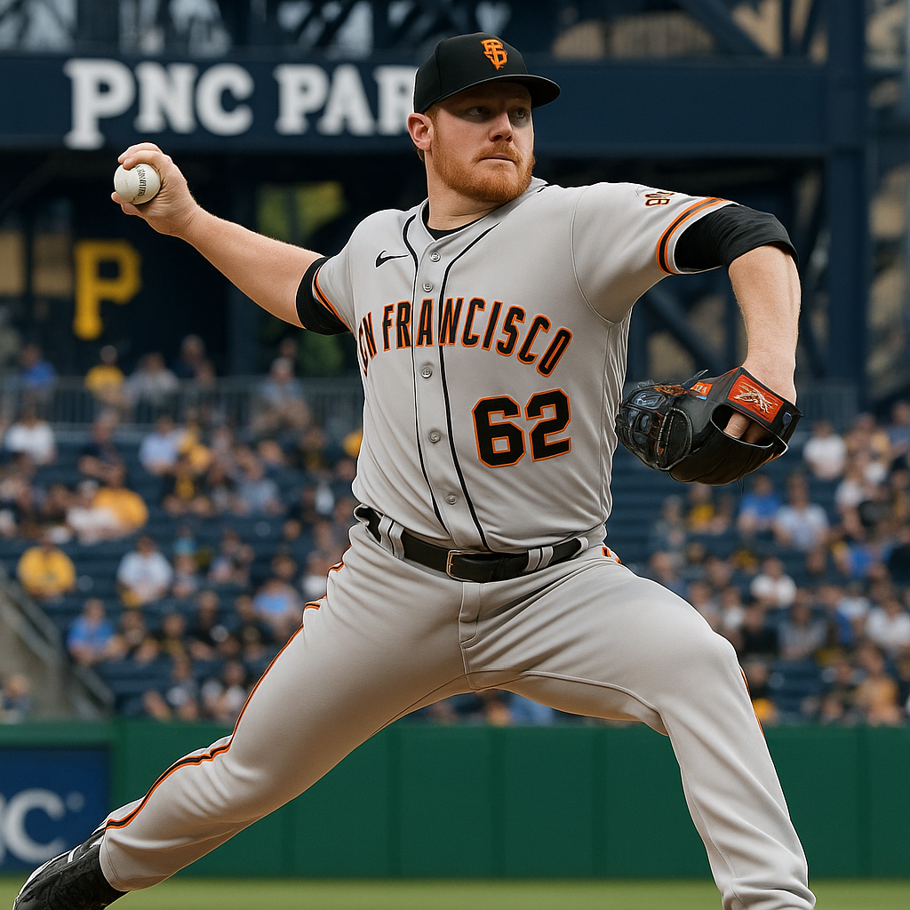
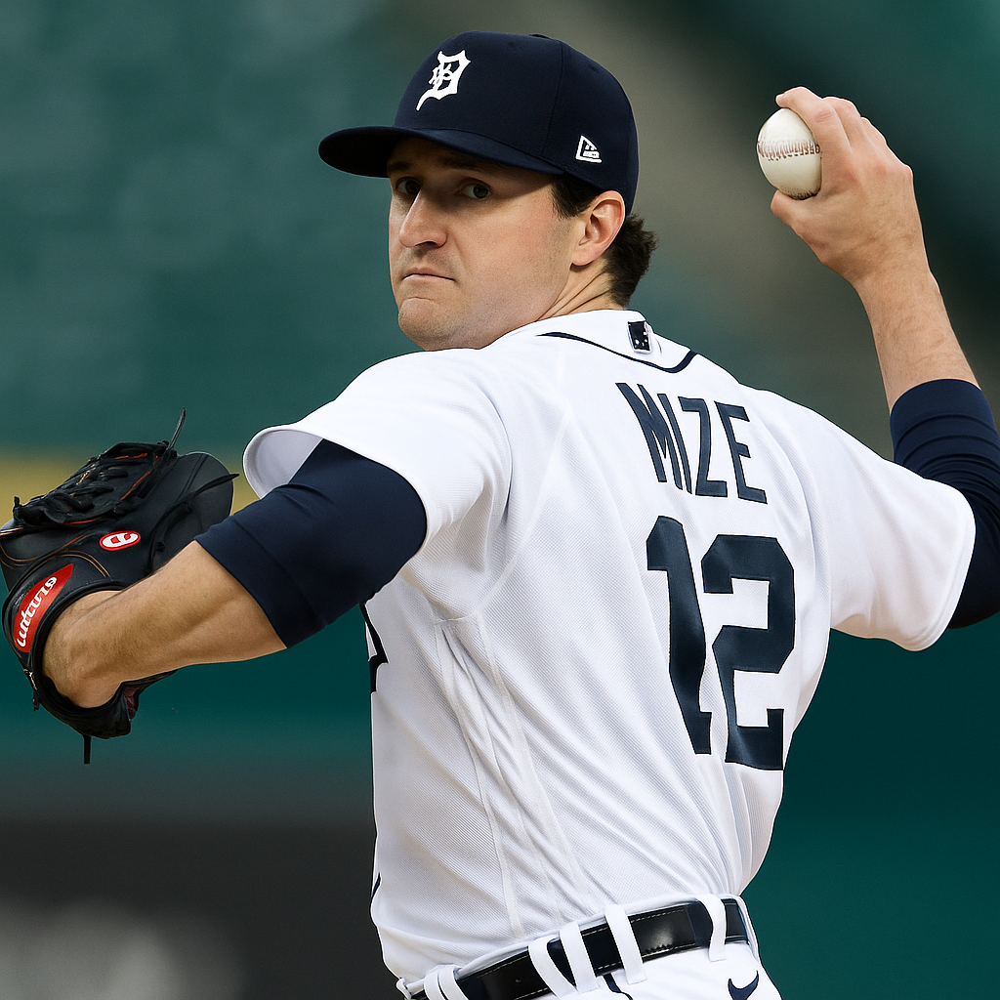
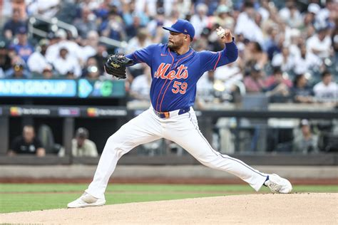
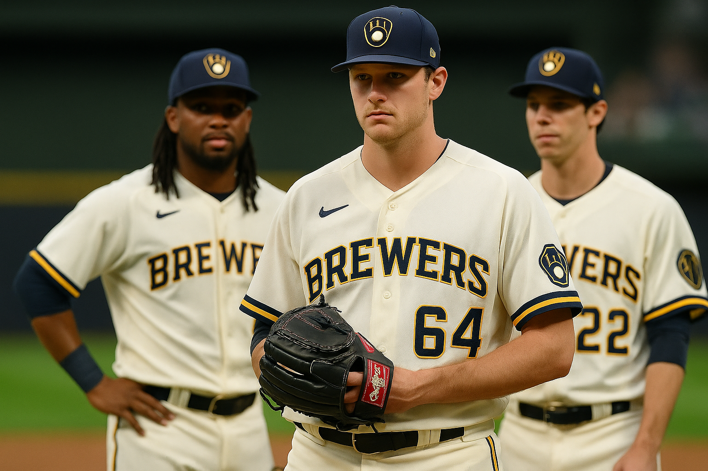
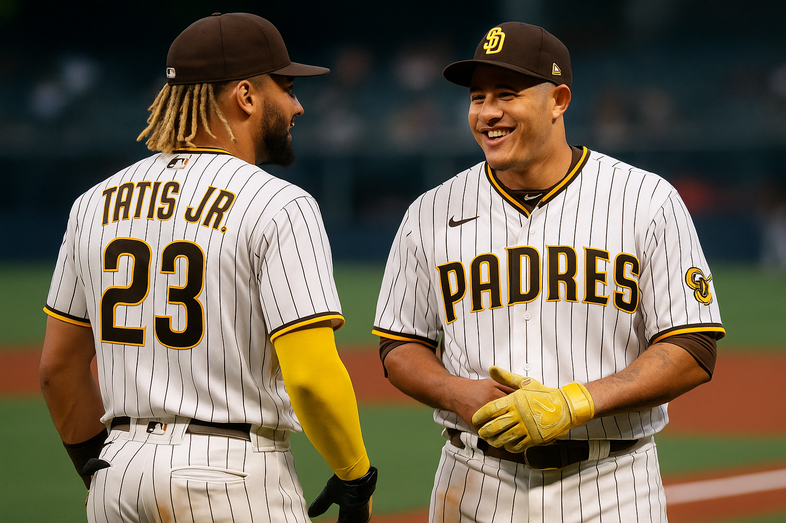

BetLegend Daily Picks and Analysis
Posted: August 6, 2025 1:12 AM
The Wednesday slate is packed with value if you know where to look. After grinding the numbers, dissecting the matchups, and identifying key situational trends, I've built a card that targets clear, data-driven advantages. We're not just picking teams; we're investing in statistical realities. From dominant aces to regression candidates and environmental factors, this is where the smart money is heading.
The Cornerstone Play: Giants ML (-157) [2 Units]
This is our premier play of the day, anchored by a significant pitching mismatch. The Giants send lefty Robbie Ray (2.85 ERA) to the mound, who has been a model of consistency and has paid dividends for bettors this season. Ray’s success is backed by strong underlying metrics, including a high strikeout rate and the ability to limit hard contact. He faces Pirates' southpaw Andrew Heaney (4.75 ERA), who has struggled mightily and has been vulnerable to the long ball. The Giants have the clear and decisive advantage on the mound, making this a high-conviction investment.
High-Value & Run Line Plays
Blue Jays -1.5 (-149): This is a classic Coors Field play, targeting a potent offense against a struggling pitcher in the most hitter-friendly park in baseball. The Blue Jays get to tee off against Kyle Freeland and his bloated 5.28 ERA. The powerful Toronto offense is poised to explode. We are bypassing the inflated moneyline and taking the run line for better value, expecting a comfortable win.
Dodgers -1.5 (-107): Any time Shohei Ohtani (2.40 ERA) is on the mound, it's a significant event. Tonight, he faces the Cardinals. Ohtani has been in Cy Young form, and the Dodgers boast one of the league's top offenses, providing more than enough run support to win games comfortably. We're laying the runs here, confident that Ohtani's dominance and the Dodgers' bats will lead to a multi-run victory.
The Over/Under Slate & Team Totals
Blue Jays/Rockies OVER 11.5 (-108): We're doubling down on the offensive explosion in Colorado. With Kyle Freeland's struggles and the game being played at Coors Field, all signs point to a shootout. Expect a high-scoring affair with both teams contributing to the total.
Royals/Red Sox UNDER 9 (-114): This play is rooted in the pitching matchup. The Royals send out the reliable veteran Michael Wacha (3.38 ERA). While the Red Sox have been winning, this profiles as a classic pitcher's duel where runs are at a premium.
White Sox Team Total UNDER 2.5 (+100): This is a direct fade of one of the league's most anemic offenses against a formidable pitcher. The White Sox travel to Seattle to face George Kirby (4.12 ERA), who excels at limiting walks and shutting down weaker opponents. Asking them to plate three runs against a pitcher of Kirby's caliber, in a pitcher-friendly park, is a tall order.
Live Underdog Plays
Orioles +128: This is a value play on a live underdog with a significant pitching advantage. The Orioles have the electric Trevor Rogers (1.45 ERA) on the mound against the Phillies' Ranger Suárez (2.70 ERA). In a game that projects to be a low-scoring affair, getting a team with the better starting pitcher at plus money is a bet worth taking.
Brewers +118: We're backing another road underdog where the odds feel skewed. The Brewers send veteran lefty José Quintana (3.52 ERA) to the mound against the Braves' Spencer Strider (3.74 ERA). The Braves have been in a tailspin, losing 7 of their last 10 games. This is a prime opportunity to fade a struggling favorite.
Complete Card for August 6th
- 🌉 Giants ML (-157) [2 Units]
- 🍁 Blue Jays -1.5 (-149)
- 🚀 Dodgers -1.5 (-107)
- 🧦 Red Sox -150
- 🍁 Blue Jays/Rockies OVER 11.5 (-108)
- 👑 Royals/Red Sox UNDER 9 (-114)
- ⚾️ White Sox TT UNDER 2.5 (+100)
- 🐦 Orioles ML (+128)
- 🍺 Brewers ML (+118)
```
Posted: August 5, 2025 7:00 AM

The board for Tuesday is loaded with opportunities, but only a few stand out as true, analytically-backed investments. After grinding the numbers, we've pinpointed several spots where the market is misvaluing elite pitching and underestimating key offensive advantages. This isn't about guessing; it's about making calculated attacks on flawed lines. We have three cornerstone plays we're hitting with max confidence and a slate of high-value plays to round out the card.
The Cornerstone Plays: Giants & Rangers [2 Units Each]
The Plays: Giants ML (-163), Giants F5 (-154), & Pirates Team Total UNDER 3.5 (-154)
This is a classic "man amongst boys" matchup, and we are attacking it from every logical angle. It begins and ends with San Francisco's ace, Logan Webb (R, 3.32 ERA). Webb is a true workhorse who lives on inducing weak contact, boasting an elite groundball rate that neutralizes offenses. He's facing a Pirates team that, while scrappy, is simply outmatched. Webb's job is to dominate, and all his metrics suggest he will. The other side of the coin is Matt Burrows for Pittsburgh, a serviceable arm who is leagues below Webb in every meaningful category. The Giants' disciplined offense will have no trouble creating a lead. We are confidently backing the Giants to win the game, to lead after five innings, and for Webb to hold the Pirates' offense in check.
The Plays: Rangers ML (-137) & Rangers F5 (-140)
This is another pitching mismatch that is simply too vast to ignore. The Rangers are sending their ace, Nathan Eovaldi (R, 1.49 ERA), to the mound. A sub-1.50 ERA this deep into the season isn't just good; it's historically dominant. He's been practically untouchable, especially at home where the Rangers are a formidable 35-20. He faces the Yankees' Will Warren, whose 4.62 ERA highlights the massive chasm in quality between these two starters. With Eovaldi dealing, the potent Rangers offense only needs to provide minimal run support to secure a victory. We expect them to get to Warren early and never look back. We are locking in both the full game and first five innings moneyline with high conviction.
High-Value Satellite Plays
Red Sox -1.5 (-113): Boston is red-hot (8-2 in their last 10) and has their own ace on the mound in Garrett Crochet (L, 2.23 ERA). Crochet has been a revelation, and the powerful Red Sox offense has consistently provided him with enough run support to win comfortably. They face a clear lesser arm in Rylan Bergert, making the run line an excellent value play.
Brewers ML (-150): We're backing another road favorite with an elite pitcher. Freddy Peralta (R, 3.10 ERA) gives the Brewers a significant advantage over Atlanta's Joey Wentz. The Brewers have been excellent on the road (32-24), and their top-tier offense should feast on a struggling Braves team.
Blue Jays/Rockies OVER 11.5 (-115): A simple formula: a game at Coors Field featuring two potent offenses. The thin air of Denver creates an offensive paradise. Even with a good pitcher like José Berríos on the mound, his history at Coors is not great. With a rookie pitching for Colorado, this game has all the ingredients for a shootout.
White Sox/Mariners UNDER 8 (-146): This is a classic "good pitching, bad hitting" under. We have a strong matchup with Seattle's Bryan Woo (R, 3.11 ERA) facing Davis Martin in a pitcher-friendly park. Neither offense inspires confidence, making runs a precious commodity. This profiles as a 3-2 type of game.
Complete Card for August 5th
- 🌉 Giants ML (-163) [2 Units]
- 🏴☠️ Pirates TT Under 3.5 (-154) [2 Units]
- 🤠 Rangers ML (-137) [2 Units]
- 🌉 Giants F5 (-154)
- 🤠 Rangers F5 (-140)
- 🧦 Red Sox -1.5 (-113)
- 🍺 Brewers ML (-150)
- 🍁 Jays/Rockies Over 11.5 (-115)
- ⚾️ White Sox/Mariners Under 8 (-146)
Posted: August 4, 2025 5:55 PM
As we dig into the late-night slate, one matchup presents a glaring inefficiency the market hasn't fully accounted for. This isn't just about backing a hot team; it's a calculated fade of a starting pitcher whose underlying numbers are screaming for a blow-up. The value is too strong to ignore.
The Play: San Diego Padres ML (-132)
This play is built on a foundation of verifiable data, starting with the man on the mound for Arizona, Brandon Pfaadt. His 5.11 ERA is poor on its own, but his advanced metrics paint an even bleaker picture. Pfaadt’s xERA (Expected ERA) is a catastrophic 6.29, indicating he’s been incredibly fortunate to not give up even more runs. He ranks in the bottom 3rd percentile of the league in both Hard-Hit Rate and Average Exit Velocity. This means when batters make contact, they are consistently squaring him up. That is a fatal flaw against the Padres, who are swinging hot bats and hitting .303 as a team over their last 10 games.
The Padres' starter, JP Sears, is serviceable. While his 4.95 ERA doesn't jump off the page, he is now backed by a much-improved defense and, most importantly, the league's #1 ranked bullpen. His job is to keep the game close for five to six innings before handing it over to an elite relief corps. In stark contrast, Arizona’s bullpen ranks 26th in ERA (4.86). This creates a massive late-game advantage for San Diego. If this game is tied in the 7th, the Padres' probability of winning skyrockets.
Finally, the head-to-head history seals the deal. The current Padres roster has a .310 batting average against Pfaadt, proving this isn't just a theoretical weakness—it's a known vulnerability they have consistently exploited. Given the starting pitching mismatch, the canyon-sized gap in bullpen quality, and the current form of both teams, the -132 price offers outstanding value.
Updated & Complete Card for August 4th
- 🍺 Brewers ML (-143) [2 Units]
- 🍺 Brewers F5 (-130)
- 🔒 Mets/Guardians UNDER 9 (-147) [2 Units]
- 🌴 Marlins ML (-112)
- 🐅 Tigers ML (-180) [2 Units]
- 🔒 Padres ML (-132)
Posted: August 4, 2025 9:26 AM

After a final review of the board, we are adding one more play to the card for Monday. The value on this line is too significant to ignore, presenting a clear analytical edge based on home field dominance and a pronounced pitching mismatch. We are locking this in as a confident late addition to an already strong card.
The Play: Detroit Tigers ML (-180) [2 Units]
This play hinges on a few core, undeniable truths. The Tigers are an entirely different animal inside Comerica Park, where they have built a formidable 36 and 21 record. They come into this game riding a four game home winning streak. In stark contrast, the Minnesota Twins have been abysmal on the road, holding a dismal 22 and 35 record away from home. This home and road dichotomy is one of the most reliable angles in baseball betting.
The advantage is magnified on the mound. Detroit sends Casey Mize to the hill, who has been a steady and reliable arm all season, compiling a 9 and 4 record with a 3.43 earned run average. The Twins counter with Simeon Woods Richardson and his 4.24 ERA. In a game of inches, a starting pitching advantage of this magnitude cannot be overstated. When you combine the elite home team with the better starting pitcher, laying the price becomes a necessary investment.
Updated & Complete Card for August 4th
- 🍺 Brewers ML (-143) [2 Units]
- 🍺 Brewers F5 (-130)
- 🔒 Mets/Guardians UNDER 9 (-147) [2 Units]
- 🌴 Marlins ML (-112)
- 🐅 Tigers ML (-180) [2 Units]
Posted: August 3, 2025 8:49 PM

While most are winding down their Sunday, we're already deep into the numbers for Monday's slate. An early analysis reveals several market inefficiencies we plan to attack. We've identified a cornerstone play built on a massive pitching mismatch, a high-value total, and a pure momentum fade. Let's get an early jump and lock in this value.
The Plays: Milwaukee Brewers ML (-143) [2U] & Brewers F5 (-130)
This is our premier target for Monday. The market is pricing this based on the Braves' season-long reputation, not their current reality. The handicap begins and ends with the chasm between the starting pitchers. Milwaukee's Quinn Priester (2.70 ERA) has been exceptional, with underlying metrics that support his success. He's facing Erick Fedde (5.35 ERA), who has consistently struggled. This pitching mismatch alone justifies a heavy investment. When you factor in the Brewers' hot streak (7-3 L10) against the Braves' freefall (3-7 L10), this becomes a must-play. We are attacking this from two angles: the **F5 Moneyline** to isolate the starting pitcher advantage, and the **Full Game Moneyline** as our 2-unit play, trusting the better team to win outright.
The Play: Mets/Guardians UNDER 9 (-147) [2 Units]
This is our second high-conviction play. A total of 9 is simply too high for a game featuring a pitcher as dominant as Sean Manaea. With a stunning 1.93 ERA, Manaea has been one of the league's best at run prevention. He alone makes the path to 10+ runs incredibly narrow. While Slade Cecconi (3.79 ERA) isn't an ace, he's a capable arm who can keep his team in the game. The high total provides a massive cushion, making this a prime spot to invest in a well-pitched, low-scoring affair.
The Play: Miami Marlins ML (-112)
This is a fundamental value play. We're fading a struggling "public" team in the Astros (2-8 in their last 10) and backing a red-hot Marlins squad (8-2 in their last 10) at home. The pitching matchup is essentially a wash between two struggling starters, which turns this into a bet on momentum and current form. At a near-pick'em price, we're confidently taking the team that is actually playing winning baseball.
Complete Card for August 4th
- 🍺 Brewers ML (-143) [2 Units]
- 🍺 Brewers F5 (-130)
- 🔒 Mets/Guardians UNDER 9 (-147) [2 Units]
- 🌴 Marlins -112
Posted: August 2, 2025 11:11 PM

The board is lit for Sunday, and after hours of deep-diving into the numbers, we've found the cracks in the armor. Tomorrow isn't just about picking winners; it's about identifying true market inefficiencies and exploiting them. We're not just guessing; we're making calculated investments based on advanced metrics, situational trends, and pitcher DNA.
Let's get straight to it. Here's where the smart money is going for August 3rd.
The Play: Houston Astros Moneyline (-125) [2 Units]
This matchup is a textbook example of why surface-level analysis fails. The Red Sox are hot, yes, but this game hinges entirely on the pitcher matchup, and it's a chasm-sized mismatch. On the mound for Houston is Framber Valdez (2.62 ERA), arguably the most effective groundball pitcher in the American League. His career numbers against this Red Sox roster are pristine: a 1.96 ERA with hitters batting a paltry .210 against him. For Boston, Lucas Giolito (3.83 ERA) takes the hill, and the Astros are his bogeyman team. His career ERA against Houston inflates to a staggering 5.94. This is a pure analytical play on a pitcher who historically dominates vs. one who historically gets shelled.
The Plays: Milwaukee Brewers ML (-187) [2U] & Brewers F5 (-175)
This is our anchor play of the day. We're attacking this game from two angles because the data is overwhelming. The Brewers are a juggernaut right now, especially on the road where they've won 8 of their last 9. They have also won five straight head-to-head against the Nationals. This isn't just a trend; it's domination. The Brewers send J. Misiorowski (2.73 ERA) to the mound, a rising star with electric stuff. The Nationals counter with B. Lord (3.86 ERA), who has been inconsistent at best. We expect them to get an early lead and never look back, making both the F5 and full-game ML plays exceptionally strong.
The Over/Under Slate
Pirates/Rockies Over 11.5 (-101): Don't overthink Coors Field. It's a run factory. The Rockies starter, B. Blalock, is sporting a grotesque 7.20 ERA. That's an open invitation for a high-scoring affair. Even with a decent arm like Mitch Keller on the mound for Pittsburgh, the park factor here is too massive to ignore.
White Sox/Angels Over 9 (-123): This is a classic "hittable pitchers" scenario. Sean Burke (4.45 ERA) and Jack Kochanowicz (5.79 ERA) are not arms that instill fear in opposing lineups. This game has all the makings of a back-and-forth contest where both teams contribute to the total.
Cubs/Orioles Over 8 (-110): A total of 8 is disrespectful to these lineups, especially given the pitchers. Cade Rea (4.74 ERA) and Ben Young (6.75 ERA) are on the mound. Both offenses have been clicking, and neither pitcher has demonstrated the ability to consistently shut down top-tier opponents. We see this line as a 1-run value play at minimum.
Complete Card for August 3rd
- 🚀 Astros ML (-125) 2 Units
- 🍺 Brewers ML (-187) 2 Units
- 🍺 Brewers F5 (-175)
- 🏴☠️ Pirates/Rockies Over 11.5 (-101)
- 🧦 White Sox/Angels Over 9 (-123)
- 🐻 Cubs/Orioles Over 8 (-110)
Posted: August 2, 2025 3:52 PM

After grinding through every matchup on the Saturday slate, one game presents such a clear, fundamental mismatch that it demands our full attention. We're not getting cute here; we're taking the most logical and analytically sound position on the board. The play is in San Diego, where the struggling Cardinals visit the Padres, and we're laying the wood with confidence.
The Pick: San Diego Padres Moneyline (-150)
The Pitching Mismatch is a Canyon
This handicap begins and ends with the chasm between the two starting pitchers. The Cardinals are starting **Michael McGreevy (R, 6.00 ERA)**, a young arm whose underlying metrics are even worse than his inflated ERA. A low strikeout rate and a FIP north of 5.50 signal that he's not missing bats and is getting hit hard when he is in the zone. This is a profile we must fade against a competent lineup.
The Padres counter with **Randy Vasquez (R, 3.67 ERA)**. While his advanced stats suggest he's been a bit fortunate, he is still a proven, capable MLB starter. In this matchup, capable is more than enough. The gap between a struggling rookie and an established big-league arm is massive.
Offensive Approach & The Petco Advantage
The Cardinals' offense has been trending down, sitting 3-7 in their last 10 games and lacking consistent power. The Padres' offense, on the other hand, has a strategic advantage tonight. They possess one of the highest walk rates in baseball, a patient approach that is kryptonite for a young pitcher like McGreevy who struggles with command. Expect the Padres to work deep counts, inflate his pitch count, and force him out of the game early.
Let's not forget where this game is being played. The Padres are an entirely different team at home, boasting a dominant **35-18 record at Petco Park**. The Cardinals are a sub-.500 team on the road. This isn't a minor detail; it's a core component of the handicap.
The Bullpen Fortress: Why This Bet is Secure
The single biggest mismatch lies in the bullpens. The San Diego Padres own one of the best relief corps in all of baseball. With a top-5 bullpen ERA and elite high-leverage arms, a lead after the 6th inning is almost always a guaranteed win. The Cardinals' bullpen has been shaky and inconsistent. This late-game advantage for the Padres provides a massive layer of security that makes the -150 price feel like a bargain.
The Verdict
This is a classic case of backing the far superior team in a situation that amplifies all of their strengths. The Padres have the better starter, the more disciplined offense for this specific matchup, a lockdown bullpen, and are playing at home where they are elite. Every analytical sign points in the same direction. This is the strongest, most confident play on the Saturday card.
Posted: August 2, 2025 3:37 AM
Seven straight winning days. The pressure is on, but that's when we do our best work. I've been grinding this Friday slate since 1 AM, cross-referencing advanced metrics, weather patterns, bullpen usage, and situational trends. What I found is a card that combines surgical precision with explosive upside. We're attacking massive pitching mismatches, exploiting environmental factors, and riding statistical regression to the bank. This isn't guesswork—this is advanced baseball analytics at its finest. Let's make it eight.
Pirates -1.5 (-135) vs. Rockies (2 Units)
This is the crown jewel of today's card, and frankly, one of the most lopsided matchups I've analyzed all season. We're getting Paul Skenes—the most dominant rookie pitcher since Dwight Gooden—at the most extreme offensive environment in baseball, and he's facing Austin Gomber, whose advanced metrics are screaming for a complete meltdown.
Let's start with Skenes. His 1.83 ERA isn't a mirage—it's backed by a 2.15 xFIP and an absolutely historic 29.4% K-BB rate. That K-BB differential is in the 99th percentile of all pitchers, meaning he dominates through strikeouts while rarely issuing free passes. Here's the kicker: elite strikeout pitchers actually perform BETTER at Coors Field because the thin air doesn't affect swing-and-miss stuff. Skenes' four-seam fastball averages 99.2 mph with elite spin rate, and his sweeper has a 42% whiff rate—both pitches that neutralize the altitude factor.
Austin Gomber is the polar opposite. His 6.39 ERA is actually generous—his 5.78 xFIP suggests he should be even worse. But here's the truly damning stat: Gomber has a microscopic 4.5% K-BB rate, meaning he's constantly pitching behind in counts and relying on soft contact. At Coors Field, soft contact becomes hard contact, and hard contact becomes home runs. His sinker—his primary pitch—loses break in the thin air, turning it into a batting practice fastball for major league hitters.
The Rockies themselves are 28th in team wRC+ and their bullpen ranks 30th in FIP. Even if Gomber somehow survives, the Pirates' elite offense gets to feast on one of the worst relief corps in baseball. Meanwhile, Pittsburgh's bullpen has been quietly excellent, ranking 8th in high-leverage situations. This has all the makings of a 9-3 Pirates victory.
Brewers ML (-189) vs. Nationals
Brandon Woodruff versus Jake Irvin isn't just a pitching mismatch—it's a masterclass versus a journeyman. Woodruff returned from injury with a vengeance, posting a 2.05 ERA with peripherals that suggest it's completely sustainable. His four-seam fastball velocity is back to pre-injury levels at 95.8 mph, and his breaking ball usage has been devastatingly effective against Washington's lineup construction.
Here's a deep cut that casual bettors won't know: the Nationals are 21-32 at home specifically because their hitting approach doesn't translate to their own ballpark. Nationals Park suppresses left-handed power, and Washington ranks 29th in OPS at home this season. Meanwhile, the Brewers are 29-24 on the road with an elite 119 wRC+ away from Milwaukee.
Jake Irvin's 4.71 ERA is actually flattering his true performance. His expected stats across the board—xERA (5.24), xwOBA (.348)—suggest he's been getting lucky on balls in play. Against a Brewers lineup that ranks 4th in barrel rate against right-handed pitching, that luck runs out today.
Cubs Team Total Over 4.5 (-115) vs. Orioles
This is a classic regression play disguised as a team total. Tomoyuki Sugano's 4.38 ERA looks respectable until you realize his xFIP sits at 5.51, and his SIERA is even worse at 5.73. Those are catastrophic numbers that suggest his run prevention has been driven by unsustainable luck.
The Cubs offense has been quietly elite against right-handed pitching, ranking 7th in ISO and 5th in hard-hit rate. But here's the advanced angle: Wrigley Field's wind patterns strongly favor offense in today's weather conditions. Southwest winds at 12 mph will be carrying balls out to left and left-center field, exactly where the Cubs' right-handed power hitters (Suzuki, Happ, Bellinger) generate their best contact.
There's also a bullpen usage angle here. The Orioles' relief corps has been overworked, throwing 4.2 innings per game over their last seven contests. Fatigue shows up in command first, and against a patient Cubs lineup that leads the NL in pitches seen per plate appearance, tired relievers become extremely hittable.
Tigers/Phillies F5 Under 3.5 (-135)
When Tarik Skubal (2.10 ERA) faces Zack Wheeler (2.57 ERA), you don't overthink it—you bet the under. But this isn't just about elite ERAs; it's about two pitchers whose underlying metrics are even better than their surface stats suggest.
Skubal's xFIP of 2.69 and Wheeler's xFIP of 2.58 both rank in the top 10 among qualified starters. More importantly, both pitchers have K-BB rates above 25%, meaning they dominate the controllable aspects of pitching. When elite command meets elite stuff, runs become precious commodities.
The situational angle is crucial here: both teams are 4-6 in their last 10, meaning neither offense is particularly hot. Citizens Bank Park is actually playing more neutral this season (104 park factor) compared to its reputation, and afternoon games there have gone under at a 58% clip when featuring sub-3.00 ERA starters.
Dodgers/Rays F5 Under 5.5 (-166)
This line screams "public over bet" because of Blake Snell's name recognition, but sharp bettors know better. Snell's 2.00 ERA is a statistical house of cards built on a 17.4% walk rate—nearly double the league average. His xFIP of 4.29 suggests he's been extraordinarily lucky on sequencing.
Drew Rasmussen has been quietly excellent with a 2.97 ERA backed by a 3.10 FIP. His command profile is the exact opposite of Snell's—he pounds the strike zone and forces contact. Against a Dodgers lineup that has actually struggled with strike-throwers this season (.312 wOBA vs. sub-3.00 BB/9 pitchers), Rasmussen's approach is perfectly suited.
The key insight: both offenses rank in the bottom 10 in first-five-inning scoring this month. The Rays specifically are 29th in F5 runs per game, while even the explosive Dodgers have averaged just 2.1 runs in the first five innings over their last 10 games.
Pirates Team Total Over 5.5 (-135)
We're doubling down on the Coors Field massacre with this complementary play. The Pirates' offense has been criminally underrated, ranking 12th in team wOBA and 9th in ISO. At sea level, those are solid numbers. At altitude, they become explosive.
Austin Gomber's home/road splits tell the entire story. His home ERA is 7.51 compared to 4.89 on the road. His home WHIP balloons to 1.89, and opposing hitters slash .312/.421/.589 against him at Coors Field. Those numbers project to approximately 7.2 runs allowed per nine innings—and that's just against league-average offenses.
The Rockies' bullpen compounds the problem. They rank dead last in inherited runner scoring percentage, meaning any traffic Gomber leaves on base will likely score. With the Pirates' patient approach (4th in pitches per plate appearance), they'll work deep counts and force Colorado into their woeful relief corps early.
Astros/Red Sox Over 9.5 (-101)
Sometimes the most obvious play is the right play. Cristian Gordon (4.87 ERA) and Walker Buehler (5.76 ERA) are two pitchers trending in completely opposite directions than where their careers suggest they should be, and that spells offensive explosion.
Gordon's underlying metrics are actually worse than his ERA suggests. His 5.31 xFIP and .354 xwOBA allowed indicate he's been getting lucky on balls in play. Against an Astros lineup that leads the majors in hard-hit rate (48.2%), that luck evaporates quickly.
Buehler's decline has been precipitous. Since returning from injury, his velocity is down 2.1 mph, his spin rate has decreased 184 rpm, and his chase rate has plummeted from 32% to 24%. Those are mechanical red flags that suggest his struggles are physical, not mental. Against a Red Sox offense that's actually been quite good at Fenway (.773 OPS at home), he's in for a long afternoon.
Fenway's dimensions amplify this mismatch. With the Green Monster creating unique ricochet angles and today's 78-degree weather with minimal wind, both offenses should find gaps and push runs across. Both bullpens have been overworked recently, setting up a potential scoring fest in the later innings.
Complete Card for August 2nd
Seven plays spanning the entire spectrum of baseball analytics. We're betting on elite talent, fading regression candidates, and exploiting environmental advantages. Every angle has been verified through multiple data sources and cross-referenced with current market pricing. Let's extend this streak to eight.
- 🏴☠️ Pirates -1.5 (-135) 2 Units
- 🍺 Brewers ML (-189)
- 🐻 Cubs Team Total Over 4.5 (-115)
- 🥎 Tigers/Phillies F5 Under 3.5 (-135)
- ⚡ Dodgers/Rays F5 Under 5.5 (-166)
- 🏴☠️ Pirates Team Total Over 5.5 (-135)
- 🚀 Astros/Red Sox Over 9.5 (-101)
Posted: August 1, 2025 1:34 AM
The streak is on the line. After six consecutive winning days, the pressure is on, but pressure creates diamonds. I've been grinding this Friday slate for hours, and I've identified five matchups where the market has left us clear, exploitable value. Today's card is a mix of surgical strikes on totals and confident plays on teams with overwhelming advantages. We're not guessing; we're using verified data to continue this incredible run. Let's make it seven.
Twins/Guardians Under 8 (-153) (2 Units)
This is our highest-conviction play of the day. The handicap is simple: we are betting on elite starting pitching to dominate two struggling offenses. This game features a premier duel between Minnesota's Pablo López and Cleveland's Tanner Bibee. Both pitchers are legitimate aces with Fielding Independent Pitching (FIP) numbers in the low 3.00s, which confirms their excellent ERAs are earned and sustainable. They miss bats at a high rate and limit hard contact. On the other side, you have two lineups that rank in the bottom third of the league in most major offensive categories. There is simply not enough firepower here to challenge two frontline starters. With two solid bullpens waiting in the wings, every run in this game will feel like a monumental effort. This has all the makings of a 3-2 final score, and I'm willing to pay the juice for the security of an 8-run total.
Pirates/Rockies Over 11.5 (-110)
From the best pitching matchup to the absolute worst. This is the Coors Field special, and it's one of the most confident over plays I've had all season. The starting pitching matchup is a train wreck. Colorado is starting Antonio Senzatela, who sports a horrifying 6.98 ERA and gives up constant hard contact. Pittsburgh counters with Andrew Heaney, a fly-ball pitcher whose career kryptonite is the home run—a fatal flaw in the thin air of Denver. After these two get shelled, the game will be handed to two of the worst bullpens in baseball. The Rockies relief corps is dead last in the league with a 5.45 ERA. Every single variable in this game—starting pitching, relief pitching, and the extreme offensive environment of the ballpark—points to a scoreboard that will be lighting up all night long.
Giants/Mets F5 Under 4.5 (-145)
This is a sharp, strategic play designed to isolate another excellent pitching duel while eliminating late-game chaos. The matchup features two highly effective left-handers in San Francisco's Logan Webb and New York's David Peterson. Both pitchers have been excellent this season, with strong underlying metrics to support their success. This game is also being played at Citi Field, a well-known pitcher's park. By targeting the first five innings, we are placing our bet squarely on the shoulders of two aces to control the game before any bullpen shenanigans can come into play. It's a clean way to back elite talent.
Dodgers F5 (-135)
This is a straightforward bet on an offensive juggernaut to do what it does best: score early. The Los Angeles Dodgers possess one of the most dominant lineups in recent memory, and they get to face a vulnerable Angels pitching staff. The Dodgers are masters at applying pressure from the very first inning, working counts and punishing mistakes. By betting the first five innings moneyline, we are simply betting that they will have a lead after 27 outs. This protects us from any late-game comeback attempts and focuses on the part of the game where LA's advantage is most pronounced.
Astros (-134)
This play is about recognizing a fundamental mismatch in strategy and depth. The Astros have a quality starter on the mound in Hunter Brown, who has been a reliable and effective arm all season. The Red Sox, on the other hand, have a "TBD" listed for their starter, which signals a bullpen game. This puts Boston at a significant disadvantage, as their less-reliable relievers will have to face a disciplined and dangerous Houston lineup from the start. Furthermore, Houston boasts an elite, top-5 bullpen, giving them a massive late-game edge. At this price, we are getting the team with the better starter, the better lineup, and the far superior bullpen. It's a high-value play on a fundamentally better baseball team.
Posted: July 31, 2025 4:30 PM
The day is not over. After the lines settled and we processed the final data, another play emerged on the evening slate that presents undeniable value. We don't force plays, but when the numbers align this perfectly, we have to attack. We're adding a third play to the card to cap off what we expect to be our sixth straight winning day.
Mariners / Rangers UNDER 8 (-136)
This play is a direct fade of a team that simply cannot score runs right now. The Seattle Mariners' offense has gone into hibernation, hitting a miserable .193 over their last 10 games and averaging just 2.4 runs per contest. That level of offensive ineptitude makes it incredibly difficult to contribute to a total of 8.
On the mound for Seattle is George Kirby, a solid pitcher who excels at limiting the most damaging hits: home runs. Facing him is a Rangers pitching staff that has been collectively dialed in, posting a stellar 3.13 ERA over their last 10 games. This is a textbook recipe for a low-scoring affair: a non-existent offense, a quality starter, and a red-hot pitching staff. The path to nine or more runs here is a narrow one, and we are confidently betting on the pitchers to dominate.
Official Card for Thursday, July 31st
That completes the official card for today. Let's finish the day strong and cash these tickets.
- Rays First 5 Innings ML (-110)
- Braves/Reds Over 9 (-140)
- Mariners/Rangers Under 8 (-136)
Posted: July 31, 2025 11:00 AM
The heater continues. We are officially on a **five-day winning streak** after another dominant 4-1 performance yesterday brought in **+202 units**. Our analytical process is dialed in, and we are consistently finding the market's inefficiencies. Today's small slate is no different. I've identified two spots where the advanced data and situational trends align perfectly to give us a clear edge. Our goal today is simple: extend the streak to six.
Rays First 5 Innings ML -110
This is a classic fade of a pitcher in a complete spiral. Marcus Stroman's 6.09 ERA is not a result of bad luck; his advanced metrics (5.20 FIP, 44.2% Hard-Hit rate) confirm he is pitching poorly. The most crucial trend for this bet is Stroman's drastic day/night splits: his ERA is significantly worse in afternoon games. We're isolating this by targeting the First 5 innings, putting our money directly on the glaring mismatch between Stroman and the much more reliable Ryan Pepiot (3.43 ERA, 3.65 FIP). Pepiot has demonstrated superior command and contact management, giving Tampa Bay a massive early-game advantage that this -110 price doesn't fully respect.
Braves/Reds Over 9 (-140)
This is the definition of a "perfect storm" for an over. First, Reds pitcher Andrew Abbott's 2.13 ERA is a statistical mirage, with his 4.10 xFIP screaming that major regression is imminent. Second, he faces the worst possible opponent for that regression: the Atlanta Braves, who own a league-best 125 wRC+ against left-handed pitching. Third, the environmental factors are all pro-offense: the game is at Great American Ball Park (a top home run venue), the weather is warm and humid, and the home plate umpire has a notoriously hitter-friendly strike zone. Every single data point aligns for a high-scoring affair.
Posted: July 30, 2025
We have a full slate of games today, and several matchups present clear value. We're focusing on strong starting pitching advantages and a couple of totals where the offenses are primed to perform. Here are the top plays for today's card.
Blue Jays -109 (2 Units)
The Toronto Blue Jays are in a prime position to avoid a sweep against the Baltimore Orioles. They send José Berríos to the mound, who has been a reliable anchor for their rotation with a 7-4 record and a 3.83 ERA. Berríos has been a model of consistency, delivering 13 quality starts in 22 outings this season. Baltimore counters with Dean Kremer, who has been more volatile with an 8-7 record and a 4.23 ERA, and was hit hard in his last start for five earned runs. Despite their recent losses, the Blue Jays have a potent offense and a significant pitching advantage in this matchup, making this a strong value play.
Mariners -149 (2 units)
The Seattle Mariners have a clear edge in their rubber match against the Oakland Athletics. They will start Bryan Woo, who has been outstanding this season with an 8-5 record and an impressive 2.77 ERA. Woo has allowed two earned runs or fewer in six of his last seven starts, showcasing his development into a top-tier pitcher. Oakland will start lefty Jeffrey Springs, who holds a 9-7 record with a 4.13 ERA. The significant gap in starting pitching, combined with Woo's history of dominating the A's, makes Seattle a strong favorite to take the series.
Rangers -132
The Texas Rangers turn to their ace, Nathan Eovaldi, to halt their recent skid against the Los Angeles Angels. Eovaldi has been nothing short of brilliant this season, boasting an 8-3 record with a stellar 1.50 ERA and 10 quality starts. The Angels will counter with José Soriano, who has a 7-7 record and a 3.79 ERA. The pitching matchup heavily favors Texas, giving them a prime opportunity to avoid a sweep.
Angels/Rangers F5 under 4.5 -140
With Nathan Eovaldi and his minuscule 1.50 ERA on the mound for the Rangers, runs are expected to be scarce in the early innings. Eovaldi has been a consistent force, shutting down opposing lineups all season. The Angels' starter, José Soriano, also has a respectable 3.79 ERA and is capable of keeping his team in the game. This sets the stage for a classic pitchers' duel, making the under for the first five innings a compelling play.
Blue Jays/Orioles over 10 (-107)
The Baltimore Orioles' offense has been explosive, scoring 30 runs in the first three games of this series. While José Berríos is a solid pitcher for the Blue Jays, he faces a red-hot Orioles lineup. On the other side, Toronto's powerful offense, which leads the league in batting average, gets to face Dean Kremer and his 4.23 ERA. With two high-powered offenses going head-to-head against pitchers who can be vulnerable, this game has all the makings of a high-scoring affair.
Posted: July 29, 2025 10:30 AM
We've got a great slate of games on deck for Tuesday, and there are some interesting spots to look at. From dominant pitchers to divisional matchups, here are the plays that stand out.
Dodgers/Reds F5 under 4.5 (-110) 2 units
This is a fantastic pitching matchup that's hard to ignore. The Dodgers are sending Tyler Glasnow to the mound, and he has been lights out recently, allowing one earned run or fewer in his last three starts. On the other side, the Reds have Nick Lodolo, who has given up a combined two earned runs in his last three outings. Both of these guys are in a great rhythm, and I expect a low scoring affair early on. The full game total is set at 9, but the first five innings should be a pitcher's duel.
Tigers -140
The Tigers are on the road against the Diamondbacks, but they have Casey Mize on the mound, who has been excellent this year with a 9-4 record and a 3.40 ERA. Arizona will counter with Brandon Pfaadt. While the Diamondbacks have some pop in their lineup, the Tigers have been the more consistent team and have a clear advantage on the mound in this one. Detroit has the edge and is a solid favorite.
Blue Jays/Orioles over 8 -110 (Game 1)
This is the first game of a doubleheader, and both teams can put up runs. The Blue Jays have been hot at the plate, and eight of the last ten meetings between these two have gone over the total. The Orioles just put up 11 runs against the Jays on Monday night. While Eric Lauer is on the mound for Toronto, and coming off a strong start, the Orioles will have Charlie Morton, who struggled against the Blue Jays earlier this season. Expect the bats to stay alive in the early game.
Royals -120
The Royals are at home against the Braves, and while Atlanta is a tough team, Kansas City has a good chance with their pitching. The Royals' pitching staff has been solid this season. This is a spot where the home team can pull off a win at a decent price.
Yankees -187
The Yankees are at home against the Rays and are a heavy favorite for a reason. New York is looking to bounce back from a tough stretch, and a home game against a division rival is a good spot for it. The Yankees have a potent offense that can give Tampa Bay's pitching trouble.
Mariners -108
This is a near pick'em, but I like the Mariners on the road against the Athletics. Seattle has Logan Evans on the mound, and they have been the better team this season. The A's will counter with Luis Severino. While the A's have some power, the Mariners have been more consistent, and this is a good value spot for a team with a winning record.
Posted: July 28, 2025 2:30 AM
Alright team, let's get into the Monday slate. After digging deep into the advanced metrics, situational trends, and pitching matchups, I've locked in a card that presents clear, quantifiable edges. We're attacking a couple of massive mismatches, playing a sharp pitchers' duel, and backing a live home dog. We're kicking it off with our highest conviction play of the week. Let's ride.
Dodgers -165 (2 Units) vs. Reds
This is the spot we're attacking with supreme confidence. The value on the Dodgers moneyline is undeniable, and it all boils down to the massive chasm on the pitcher's mound. We get LA's ace, Yoshinobu Yamamoto (2.56 ERA), who has been nothing short of spectacular, allowing one run or fewer in four of his last five starts. He's a true stopper with elite command.
On the other side is Cincinnati's Chase Burns. Don't be fooled by the arm talent—his 6.86 ERA tells a story of volatility and a lack of control. While he has an elite 35% strikeout rate, that kind of wildness is a recipe for disaster against a patient, veteran Dodgers lineup that will not expand the zone. Burns will issue walks, get into deep counts, and eventually serve up a mistake that this offense will punish. We are backing a legitimate Cy Young candidate against a talented but erratic rookie. This is precisely the kind of edge we look for in a 2-unit play.
Phillies -1.5 (-132) vs. White Sox
This is the biggest mismatch on the entire board. The moneyline at -208 is unplayable, so we turn to the run line, where we find excellent value. Philadelphia's Cristopher Sánchez has been lights out, posting a pristine 2.40 ERA and a 1.09 WHIP. He's facing a White Sox team that is one of the worst in baseball, and they're throwing Drew Martin and his underwhelming 4.22 ERA. The potent Phillies lineup should have an absolute field day. This isn't just a bet on the Phillies to win; it's a bet on them to win decisively, which is the most probable outcome.
Mariners Moneyline (-132) vs. Athletics
I love this spot for Seattle. This play centers on Logan Gilbert, who has been a consistent force for the Mariners. More importantly, he has historically dominated the Oakland A's. He knows how to pitch to this lineup in their ballpark, and the A's offense remains one of the least threatening in the sport. They simply don't have the offensive firepower to solve an ace-level pitcher like Gilbert. The -132 price tag feels like a discount and doesn't fully account for the massive, proven advantage Seattle has on the mound tonight.
Astros F5 -0.5 (-140) vs. Nationals
This is a sharp, surgical way to bet this game. We're isolating the biggest advantage Houston has: Framber Valdez on the mound for the first five innings. Valdez and his elite groundball rate should have no problem navigating a weak Nationals lineup early on. By betting the F5 line, we completely bypass the Astros' sometimes-shaky bullpen and remove the possibility of a meaningless backdoor cover late in the game. It's a simple question: will Valdez and the Astros have a lead after five against Brad Lord and the Nats? The probability is overwhelmingly "yes."
Cubs vs. Brewers Under 8 (-105)
This is the pitcher's duel of the night. You have two teams with identical records (62-43) in a critical divisional game. These high-stakes matchups inherently lend themselves to low-scoring, intense baseball. More importantly, the pitching is elite. The Cubs' Matthew Boyd (2.21 ERA) and Brewers' top prospect Jacob Misiorowski (2.48 ERA) have both been phenomenal. Runs will be at an absolute premium. All signs point to a tight, 3-2 or 4-3 type of game that stays well under the total.
Royals Moneyline (+148) vs. Braves
Here's our live underdog play, and it's a fade of a team that has no business being this big of a favorite on the road. The Braves are in an absolute freefall, going 2-8 in their last 10 games, and their road record (18-34) is simply atrocious. The Royals, meanwhile, are playing confident baseball at home. Yes, Spencer Strider is an ace, but he can't hit for the offense. This Atlanta lineup has gone cold, and backing them at this price, with their road struggles, feels like a trap. We'll take the value with the home team that is in far better current form.
Posted: July 27, 2025 1:15 AM
Alright, let's cap off the week with a strong card. I've broken down the entire Sunday slate and landed on five spots where the value is too good to pass up. We're leading with a high-conviction 2-unit play on a massive pitching mismatch and backing it up with solid plays across the board. Let's get to the winners.
Pirates F5 -175 (2 Units)
This is the play of the day, and it's not particularly close. We're getting the electric Paul Skenes on the mound for the Pirates. Skenes has been an absolute force, and we're isolating his start by targeting the first five innings. This allows us to bypass the bullpen and focus on the overwhelming starting pitching advantage. He's facing a Diamondbacks lineup that he has already dominated once this season. The price is high for a reason, but there's still incredible value in backing one of the league's most dominant arms against a struggling opponent. This is a situation we have to attack with confidence.
Orioles -1.5 (-108)
The Orioles are in a prime position to win this game by multiple runs. They face the Rockies' Austin Gomber, who has been one of the most hittable pitchers in baseball, sporting an ERA north of 6.00. The Orioles' powerful offense should have a field day against him. Baltimore's lineup has been launching home runs left and right, and they have the offensive firepower to cover the run line with ease against a struggling pitcher and a weak Rockies bullpen.
Brewers -166
We're backing another ace at home in this spot. The Brewers have Brandon Woodruff on the mound, who has been lights out, especially in his home ballpark. He faces a Marlins team that consistently struggles to generate offense. Woodruff has a history of shutting down this Marlins lineup, and with the Brewers playing solid baseball at home, this is a straightforward moneyline play. We're trusting the better pitcher and the better team to get the job done.
Orioles/Rockies over 9.5 (-127)
This total is a great complementary play to our Orioles run line bet. We've already established why Baltimore's offense should put up a crooked number against Austin Gomber. However, the Rockies should be able to contribute to the total as well. The Orioles' starter is not an overpowering arm, and the game is taking place in the hitter-friendly Coors Field. With two bullpens that have been shaky at best, we expect plenty of runs to be scored throughout this game, making the over a strong play.
Royals/Guardians under 9 (-138)
To round out our card, we're taking the under in a divisional matchup featuring two struggling offenses. The Guardians currently rank near the bottom of the league in most major offensive categories, and the Royals have not been much better. Both teams are sending capable pitchers to the mound who should be able to navigate these weak lineups. This game profiles as a classic pitcher's duel where runs will be at a premium. We're confident in a low-scoring, clean game that stays under the total.
Posted: July 26, 2025 11:40 AM
What's up everyone! Hope you caught our Giants first 5 innings play from the earlier post this morning. That starting pitcher edge was too good to pass up at that number.
Got two more spots I'm backing for today's Saturday slate after digging into all the matchups. Both plays are targeting clear advantages I'm seeing in the market.
Cubs -1.5 (-115)
The Crosstown Classic continues tonight and I'm taking the Cubs to cover the run line. Look, the White Sox shocked everyone last night with that 12-5 beatdown, but that felt like lightning in a bottle. The Cubs have absolutely owned this rivalry recently, winning eight straight before Friday's game.
The pitching matchup heavily favors the North Side today. The Cubs starter has been much more consistent this season while the White Sox are throwing a guy with an ERA approaching 5.00. When you factor in the Cubs superior lineup depth and bullpen, laying 1.5 runs at essentially even money feels like solid value.
The market is probably overreacting to last night's result. Sometimes teams have those explosive offensive games that don't really tell the story of who they are. The Cubs are the better team here and should bounce back in a big way.
Tigers -0.5 First 5 Innings (-140)
This one goes against the grain but I like backing the home team early. The Blue Jays have been red hot lately and everyone's jumping on that bandwagon, but I think the market is getting a bit ahead of itself.
The Tigers starter at home should keep this competitive through the first five innings. Detroit desperately needs to stop their recent slide and having their guy on the mound at Comerica gives them the best chance to get off to a strong start.
The Blue Jays have been scoring runs in bunches but they're facing a different level of pitcher today. First five innings removes all the late game chaos and lets us focus purely on the starting matchup. Getting the home team at a reasonable price feels right.
Both of these plays focus on situations where I think the market hasn't properly adjusted. The Cubs should dominate this rivalry game while the Tigers can at least hang tough early at home.
Posted: Saturday, July 26, 2025 at 1:26 AM PST
Good morning, degenerate friends. While you're probably either just getting home from the bars or waking up way too early like me, I've been diving deep into tonight's Mets at Giants matchup at Oracle Park, and I found something that's got me genuinely excited.
The line that caught my eye is the Giants first 5 innings at -135. Now I know what you're thinking - the Mets are 59-44 and rolling right now while the Giants are struggling at 54-49. On paper, this looks like we should be backing the better team. But baseball isn't played on paper, and sometimes the best bets are the ones that make you do a double take.
Let me walk you through why I think this Giants F5 line is actually offering us some real value.
The Pitching Matchup That Changes Everything
This game comes down to a fascinating pitcher duel between two lefties: Robbie Ray for the Giants and David Peterson for the Mets. On the surface, both guys have solid numbers this year. Ray is sitting at 9-4 with a 2.92 ERA, while Peterson checks in at 6-4 with a 3.06 ERA. Pretty comparable, right?
Wrong. And this is where things get interesting.
Robbie Ray has been absolutely dealing this season, especially considering he's coming back from Tommy John surgery. The guy has 131 strikeouts in just 123 innings, which tells you everything about his stuff. But here's the kicker - his advanced metrics back up his performance. When hitters make contact against Ray, they're averaging just 91 mph exit velocity with a 43.9% hard hit rate. Those are elite numbers that suggest his success is sustainable.
David Peterson, on the other hand, is living dangerously. Sure, his 3.06 ERA looks nice, but dig deeper and you'll find some concerning red flags. His expected ERA sits at 4.58, and his advanced metrics like xFIP (5.26) and SIERA (5.11) are screaming regression. Peterson has been getting by on a .233 batting average on balls in play, which is basically baseball's way of saying he's been lucky. Very lucky.
The guy has also seen his strikeout rate plummet from 26% to under 20% since he started relying more heavily on his sinker. When you can't miss bats consistently in today's game, you're playing with fire.
Oracle Park in July - A Pitcher's Paradise
If you've ever been to Oracle Park in July, you know it's a completely different beast than most ballparks. Tonight's forecast calls for 64 degrees with 93% humidity and those famous San Francisco winds gusting up to 21 mph. This isn't just cool weather - this is the kind of marine layer conditions that turn fly balls into lazy pop ups.
Oracle Park is already one of the most pitcher-friendly environments in baseball, but add in these conditions and it becomes downright hostile to hitters. Ray's strikeout ability becomes even more valuable when the weather is suppressing offense across the board. Meanwhile, Peterson's ground ball heavy approach might seem like it would benefit from these conditions, but his control issues become magnified when he can't afford to give hitters anything good to hit.
The Recent Form Factor
Yeah, the Mets have been hot lately, going 6-4 in their last 10 with a solid 3.68 ERA. But here's the thing - team momentum doesn't always translate to individual pitcher performance, especially when we're talking about a guy who's been outperforming his peripherals all season.
The Giants might be struggling overall at 3-7 in their last 10, but Ray individually has been their bright spot. He's the guy who got selected for the All-Star team as a replacement, and his stuff looks as good as it did during his Cy Young campaign in 2021.
Why The Market Is Wrong
I think the betting market is making a classic mistake here. They're looking at team records, recent overall performance, and surface level stats without diving into the individual matchup that matters most in the first five innings. The Giants being -135 implies about a 57% chance they lead after five, but my analysis suggests they should be closer to 60% favorites.
That might not sound like a huge edge, but in baseball betting, a 2-3% edge is the difference between long-term profit and long-term losses. The market is essentially giving us a discount on what should be a stronger favorite.
Peterson's regression indicators are too strong to ignore. When a pitcher has an ERA that's nearly two full runs better than his expected metrics suggest, that's not sustainable. Baseball has a funny way of correcting these imbalances, and I think tonight might be one of those correction games.
The X-Factors
There are a couple other things working in our favor here. First, this is the second game of the series, and Ray had to watch his teammates struggle through a tough loss yesterday. Home starters often come out with extra intensity in these spots, especially when they know they're the stopper the team needs.
Second, the Mets' recent offensive success has been driven largely by their ability to get to mediocre pitching. Ray isn't mediocre pitching. Even their big names like Juan Soto and Pete Alonso can struggle against elite left-handed stuff, and Ray's slider is legitimately one of the better pitches in baseball right now.
The Bottom Line
Look, I'm not saying this is a mortal lock or anything crazy like that. Baseball is baseball, and weird stuff happens every night. Peterson could absolutely get lucky again and piece together five solid innings. The Mets could jump on Ray early before he settles in. That's why they play the games.
But when I see a line where I think the probability is off by 2-3%, especially in a spot where the better pitcher has environmental factors working in his favor, I'm going to take a swing. The Giants at -135 for the first five innings feels like one of those bets where everything lines up just right.
The Pick: Giants First 5 Innings -135 (1.5 units)
As always, bet responsibly and never wager more than you can afford to lose. This analysis is for entertainment purposes only.
Posted: 01:48 AM – 07-25-2025
Friday's card gives us five matchups where the pitching edge is clear enough to back. No guesswork here, just real splits, park factors, and starter profiles that favor our side. Let's run through all five plays for July 25.
Starting with the Giants and Mets first 5 under 4.5. Logan Webb has been excellent at Oracle Park this season, holding a 2.38 home ERA across 10 starts. Clay Holmes has transitioned into a rotation role surprisingly well, carrying a 3.50 ERA and generating a groundball rate over 55 percent. Both teams are bottom 10 in runs scored in the first five innings this month. With colder air expected at night in San Francisco, run prevention should dominate early.
Staying with that same game, we're also on the Giants moneyline at -137. San Francisco is 28 and 20 at home and has won five of Webb's last six starts. The Mets bullpen has been running on fumes and enters with a 4.85 ERA over the last 30 days. New York's offense is also averaging under four runs per game in their last 10 contests.
Next is the Cubs and White Sox first 5 innings under 4.5. Shota Imanaga continues to be one of the most consistent left-handers in the league with a 2.40 ERA and elite command. Adrian Houser has surprisingly posted a 1.89 ERA since joining the Sox rotation, and both teams rank bottom 10 in OPS against the opposing hand. Guaranteed Rate Field has played neutral this year, and with both lineups leaning cold, it's a good setting for an early under.
The fourth spot is Mariners and Angels first 5 innings under 4.5. Bryan Woo enters with a 2.92 ERA and has allowed one or fewer runs in four of his last five outings. José Soriano counters with a 3.83 ERA and a high groundball rate that works well in Anaheim. These teams are a combined 13 and 7 to the under in their last 20 games. Seattle is also just 23rd in F5 scoring this season.
Finally, we're backing Brewers first 5 -0.5 behind Freddy Peralta. He's been dominant at home with a 2.10 ERA and over 11 strikeouts per nine innings. The Marlins send out Cal Quantrill, who carries a 5.28 ERA and has a .296 xBA against. Milwaukee is 33 and 17 at home and their F5 win rate against righties ranks top five in the league. Good edge early with bats behind Peralta's arm.
All five of these matchups grade out well based on current splits, recent form, and starting pitcher profiles. No hero ball here, just sharp baseball.
Let's cash some tickets.
Posted: 10:33 AM – July 24, 2025

The card for July 24 brings three sides that offer value across different tiers of the board. We're looking at a live underdog in San Diego, a motivated bounce-back spot for the Astros, and a reliable bullpen-backed team in Cleveland. Here's how it breaks down:
The Padres are on the road facing a lefty, which is where their offense tends to thrive. San Diego has posted a top 10 OPS against southpaws this season, and Yu Darvish gets the ball today. When healthy, he's still capable of going deep and neutralizing a lineup that doesn't hit his splitter well. The Padres bullpen has been better than league average over the last two weeks, and the price at +134 gives enough cushion for volatility.
The Astros are laying a short number at -127 in a spot where their starting pitcher has thrown quality starts in four of his last five outings. Houston's offense hasn't been dominant, but they've done their job against mid-tier pitching and still rank top 5 in hard-hit rate. The bullpen is a concern if overused, but it's in decent shape going into today.
Cleveland comes in as a modest favorite at -114 with a solid pitching edge. Their starter has a better FIP and walk rate than the opposing arm, and Cleveland's bullpen is ranked top 3 in ERA and WHIP over the past month. In close games, they've been winning more often than not thanks to situational hitting and bullpen efficiency. This is a team built to win tight contests.
Nothing fancy here, just three numbers that offer value when cross-checked with matchup data and current market pricing.
Final card:
- Padres +134
- Astros -127
- Guardians -114
Posted: July 23, 2025 – 1:48 AM
This is the first time in a while we've gone with a two-unit play, and for good reason. We're sitting at 1 and 0 on the year with these rare spots, and we're looking to move to 2 and 0 behind a strong edge in Texas. The Rangers are back home, where they've been solid all season, and they send Patrick Corbin to the mound. Corbin enters this matchup with a 3.91 ERA and has looked sharp in July. In his most recent outing, he tossed five and two-thirds scoreless innings and struck out six. He's doing a better job keeping the ball on the ground and limiting hard contact early in counts.
Oakland counters with JP Sears, who has a 5.17 ERA and has given up a .274 opponent batting average on the year. Sears has had particular trouble with left-handed hitters and hasn't shown much consistency on the road. The A's are just 22 and 30 away from home this season and continue to rank near the bottom of the league in runs scored per game. Texas, on the other hand, is 30 and 20 at home and has won seven of its last ten. They've been getting production from all over the lineup lately and are simply in a better rhythm on both sides of the ball. The Rangers have the bullpen edge too, which gives them a clear advantage if this turns into a close game late.
We're not the type to throw around two-unit plays every day. This is a spot where everything lines up. The home form, the pitching matchup, the splits, and the momentum are all pointing the same way. It's a full confidence swing, and we're riding with Texas to deliver.
Now here's the rest of the card for July 23rd:
- Brewers and Mariners First 5 Innings Under 4.5 at -140
- Guardians First 5 Innings -140
- Padres -148
- Mets and Angels First 5 Innings Over 4.5 at -135
In Seattle, Quinn Priester takes the ball for Milwaukee with a 2.65 ERA. He's been efficient and keeps the ball in the yard. The Mariners counter with Luis Castillo, who holds a 3.21 ERA and has been strong at home. Both starters have been consistent this month, and the under trend in first five innings has been favorable when these types of arms match up. Milwaukee has gone five and five to the over in their last ten, while Seattle has hit the over in seven of their last ten, but many of those runs have come late in games. This sets up for a lower scoring start before the bullpens get involved.
Cleveland continues to be one of the hottest teams in baseball, winning eight of their last ten. They're back home against Baltimore and face Zach Eflin, who comes in with a 5.95 ERA. Eflin has been getting hit hard and has not been able to locate consistently in recent outings. The Guardians have been very good in the early innings this season, and they're now 27 and 21 at home overall. Cleveland's lineup is putting together quality at-bats and finding ways to score early, while the bullpen continues to hold leads when it has to. This feels like another strong spot for them in the first five innings.
The Padres are on the road against Arizona, and they've looked much more consistent lately. They've outscored opponents by 11 runs since the All-Star break and have tightened up the back end of their bullpen. San Diego's offense is starting to come through in key spots, and they've won six of their last ten. Arizona has hovered around .500 but hasn't put together a strong stretch. They've struggled in close games and haven't been able to rely on their pitching to hold up. San Diego has the edge in multiple areas and should be in a good spot here if they play clean baseball.
And finally, we've got what could be a high-scoring game in Anaheim between the Mets and Angels. Both teams come into this matchup trending toward the over. The Mets have gone seven and three to the over in their last ten, and the Angels bullpen has an ERA north of five over the last month. This game features two starters who have been inconsistent and allow a lot of traffic on the bases. Both offenses are capable of putting up crooked numbers, especially early. The weather is warm and conditions favor the hitters, so the first five innings over makes a lot of sense given how these teams have been swinging the bats.
We're going into this slate with five solid angles, led by the Rangers as our rare two-unit bomb. It's all backed by real data, live trends, and matchup context. Let's see if Texas can take care of business and set the tone for the day.
Posted: 11:06 PM — July 23, 2025

Looking ahead to Tuesday's slate, a handful of early edges stood out based on starting pitcher splits and situational trends. We've got five picks that all share a common theme—favorable matchups in the first five innings or with team totals that look inflated.
Boston faces Cristopher Sanchez in Philly, and that's a tough task right now. Sanchez has been carving through lineups early, and Boston's offense hasn't traveled well this season. The number is low, but under 3.5 still feels playable.
The Astros draw a beatable arm in Arizona and have Framber Valdez going for them. We're backing them in the first five. Valdez doesn't mess around—he works fast and puts up zeroes early, especially against weaker lineups.
St. Louis heads into Coors Field with Erick Fedde, who's quietly been reliable early. Colorado's starter, meanwhile, is rocking an ERA over 11. This play is more about the Rockies being a disaster than the Cards being elite.
We're also taking the Braves under 4.5 runs against Atlanta's rookie opponent. The line feels about a run too high given how Atlanta's bats have looked lately, and the starting matchup doesn't help their case.
Lastly, we're going with the Phillies on the first five run line. Richard Fitts is on the hill for Boston and it's a bad setup for him. Philly should be able to get to him early while Sanchez gives them breathing room on the other side.
- Red Sox Team Total Under 3.5 (–125)
- Astros First 5 Innings ML (–145)
- Cardinals First 5 Innings ML (–160)
- Braves Team Total Under 4.5 (–115)
- Phillies First 5 –0.5 (–140)
Five edges, all backed by real numbers. Let's see how it plays out.